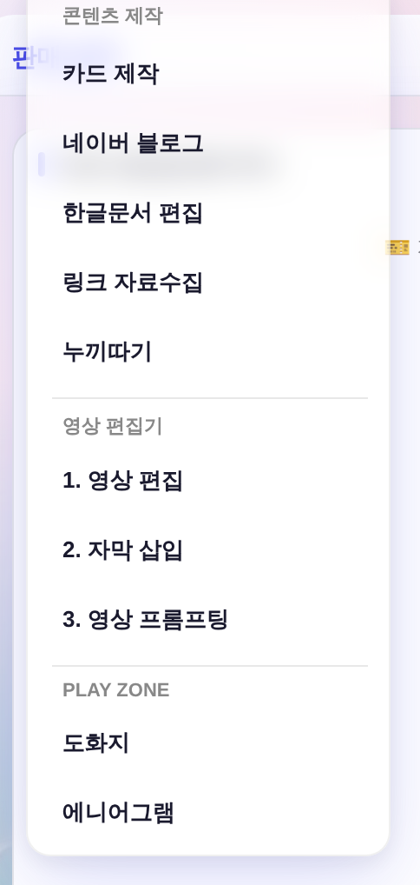
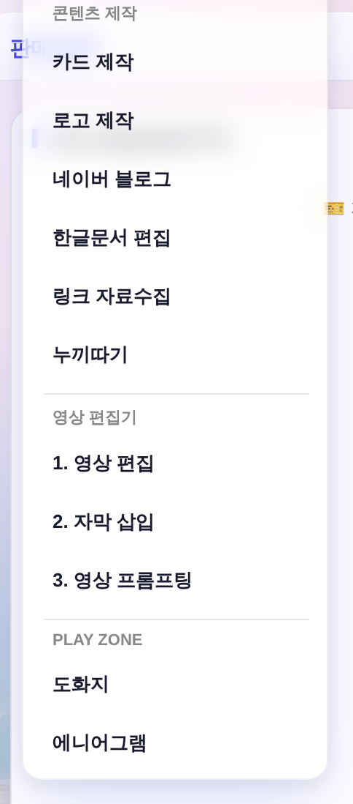
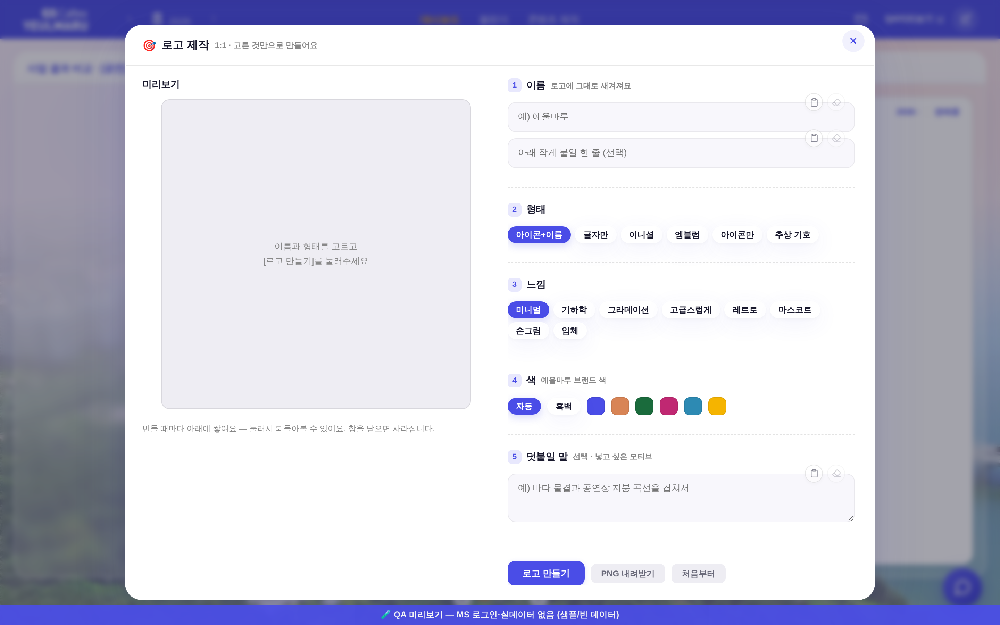
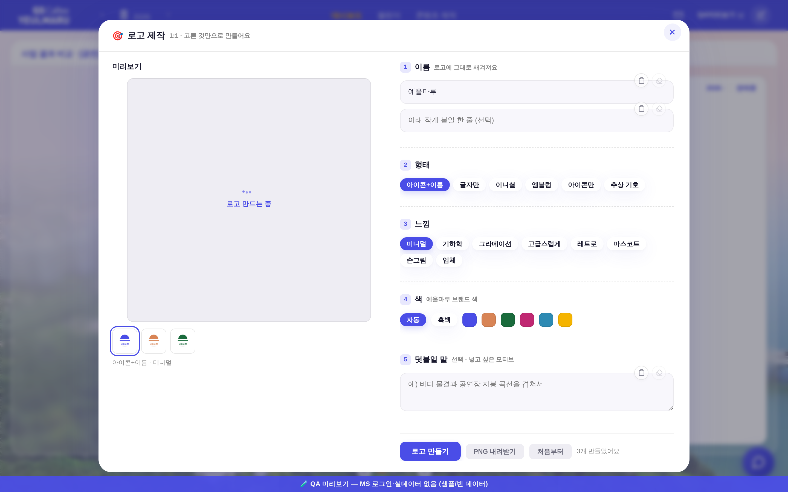
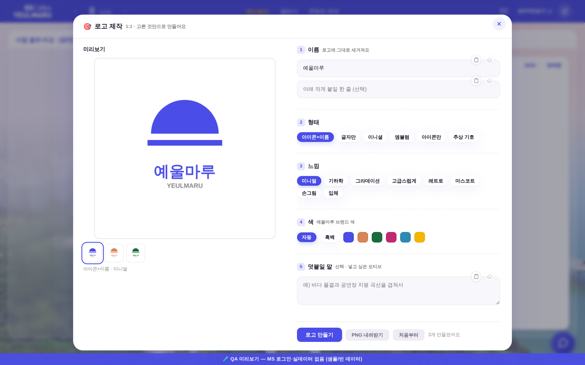
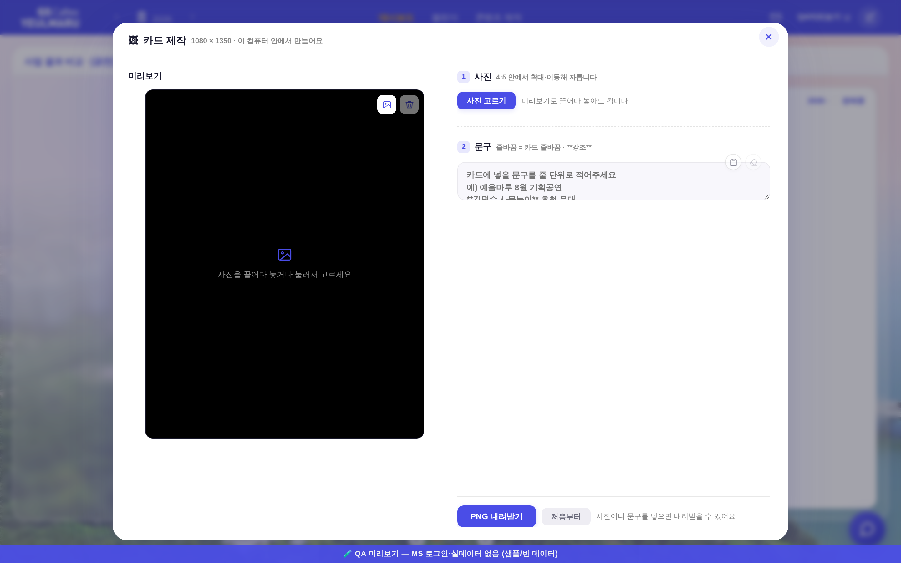
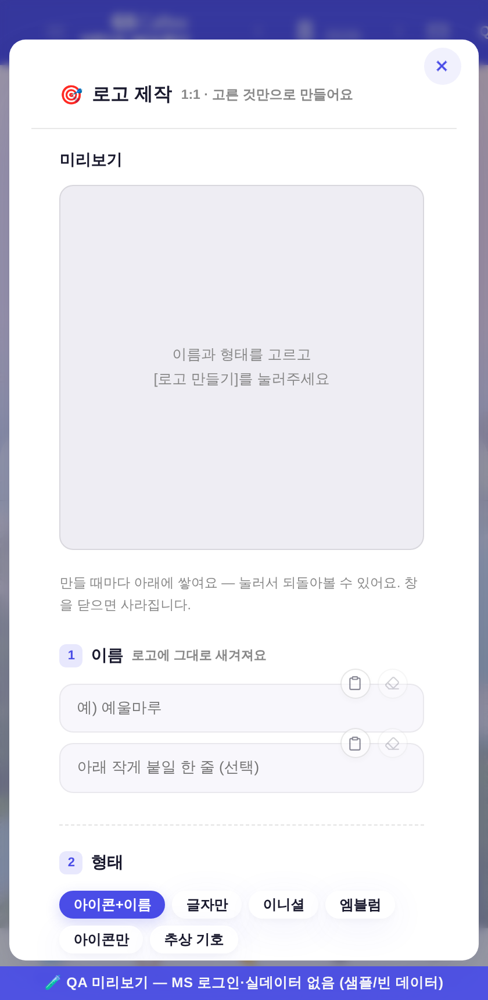

지시(운영자): 「로고 제작 기능을 붙여줘볼래? 어떤건지 설명해주고, 콘텐츠 제작에 일단 붙여놔줘」 — 첨부 = nerdboard 게시물(github.com/Nutlope/logocreator), 본문 「이제 크몽은 이용 안 할 듯」.
화면 = QA 진입로(?qa=1) 목데이터 · 실API·실데이터·PII 미접촉. 1440×900 · deviceScaleFactor 2.
「콘텐츠 제작」 드롭다운 「카드 제작」 바로 아래에 한 줄. 팝오버 폭 198px 유지 · 높이 465 → 505(한 줄분 +40).



로더 = 정본 .ol-dots(_ldHtml(16)) + 「~중」 표기(말줄임 점 금지 = 기틀 §2 #13 로딩 문구 표준).

⚠ 이 그림의 로고는 모델 산출물이 아니라 자리표시(결과 상태 레이아웃 확인용 로컬 캔버스 이미지)다 — 실제 모델 호출은 운영자 키가 있는 배포 Worker에서만 가능하다. 썸네일·선택링·[PNG 내려받기] 활성화·「N개 만들었어요」가 이 상태에서 도는 것을 실측한 화면.

셸을 새로 만들지 않고 openCardMaker(cm-*) 골격을 그대로 계승했다. 다른 건 산출비뿐(카드 4:5 → 로고 1:1).
| 항목 | 카드 제작(기존) | 로고 제작(신규) |
|---|---|---|
| 모달 | 1080 × 828 @ x180 | 1080 × 828 @ x180 (동일) |
| 미리보기 상자 | 446.4 × 558 @ x231.8 | 446.4 × 446.4 @ x231.8 (폭·좌표 동일, 비율만 1:1) |
| 부품 | .modal · .modal-x · .btn · .nb-chip · .ve-sec · .ve-swatch · .ol-dots — 전부 정본 재사용 | |
| 신규 raw hex | 0 (check_design 1590/1590) | |

1열 폴백. #lm-board 안 가로 넘침 0. ⚠ 문서 가로 넘침 126px은 모달을 안 열어도 같은 값(카드 제작도 126) = 이 폭의 앱 공통 성질, 신규 회귀 아님.

정본 = src/index.js buildLogoPrompt. 산출이 이상하면 프론트가 아니라 이 문장들을 고친다.
| 순서 | 내용 |
|---|---|
| ① 매체 | 플랫 2D 벡터(기본) / 폴리시드 렌더(그라데이션·입체일 때) |
| ② 형태 | 아이콘+이름 · 글자만 · 이니셜 · 엠블럼 · 아이콘만 · 추상 기호 |
| ③ 느낌 | 미니멀 · 기하학 · 그라데이션 · 고급스럽게 · 레트로 · 마스코트 · 손그림 · 입체 |
| ④ 글자 | 글자 없는 형태 = "no lettering" · 이니셜 = 머리글자만 · 그 외 = 이름 정확히 · 한글이면 Hangul 각주(이 레포가 덧댄 것) |
| ⑤ 색 | 자동 / 흑백 / 브랜드 6색(_CPAL = :root --c1~--c6 그대로) |
| ⑥ 배경 | 완전 균일 단색 — 비네트·그라데·그림자·질감·테두리 금지 |
| ⑦ 금지 | 목업·명함·간판·워터마크·캡션·색상칩·한 장에 여러 안 |
⚠ 엔진만 갈음 — 새 키 0. 원본은 Together AI 키를 새로 요구하지만, 이 레포엔 이미 Worker 시크릿 GEMINI_API_KEY가 OCR·분석용으로 있어 같은 계열 이미지 모델로 붙였다(원본도 글자 있는 로고는 google flash-image 계열로 보낸다). 모델 후보 = LOGO_MODEL → gemini-3.1-flash-image → gemini-2.5-flash-image.
check_design 1590/1590 ✓(신규 raw hex 0) · check_refs ✓ · check_wiring ✓ · build_annual_yr PASS(_YR 무접촉) · smoke_login PASS(JS 회귀 0) · smoke_layout PASS 1920×1080.
헤드리스 DOM 실측: 형태 6칩 · 느낌 8칩 · 스와치 6 + 칩 2 · 미리보기 446.4×446.4(1:1) · 「아이콘만」 선택 시 이름칸 안내 전환 + 태그라인 숨김 · pageerror 0.
미검증 1건(정직 표기) — 실제 모델이 뽑은 로고 그림은 이 세션에서 못 봤다(배포 Worker 키 필요). 첫 실사용 때 한글 렌더 품질 확인 필요.